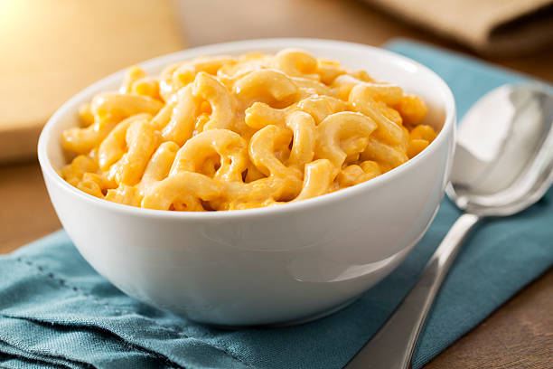
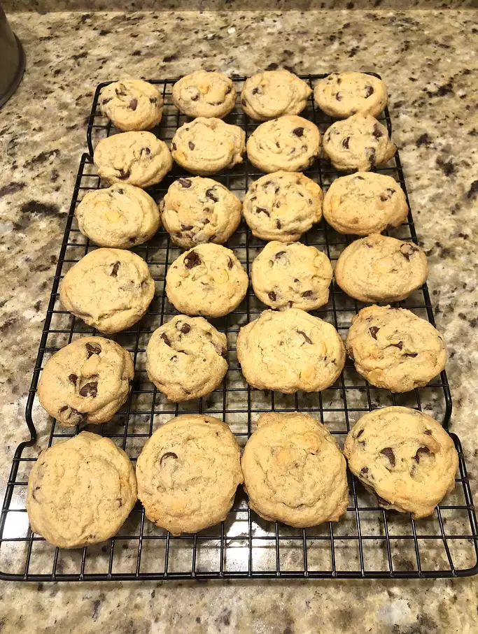
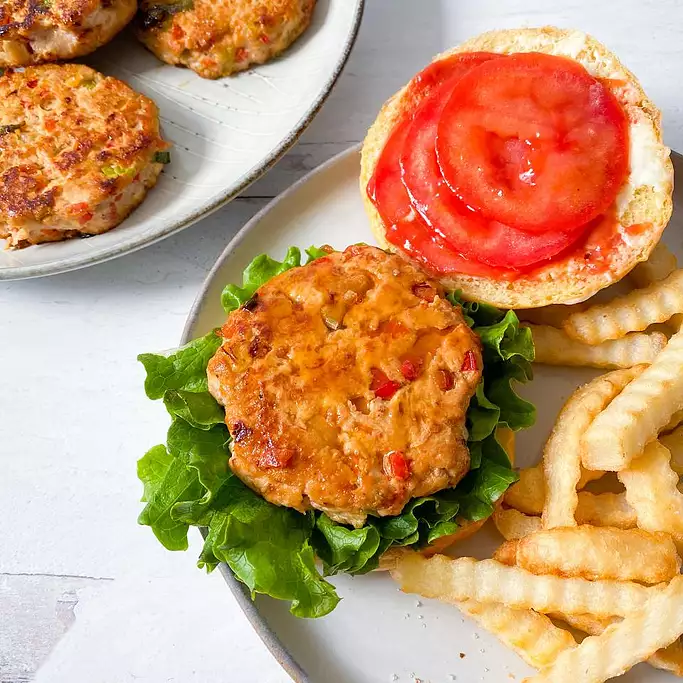

Macaroni and Cheese Formula
Macaroni Recipe

Description:
This is a macaroni recipe meant to serve one. It takes 30 to 40 minutes at the most to make, and it will for sure fill you up Yum!
It was originally inspired by the home alone mac and cheese, Enjoy!
Ingredients:
- 1 cup elbow macaroni
- 2 tablespoons butter
- 1 tablespoon all-purpose flour
- 3/4 cup fat-free half-and-half
- 3/4 shredded sharp Cheddar Cheese
- 1/2 teaspoon salt
- 1/4 teaspoon Worcestershire sauce
Steps:
- Bring a large pot of lightly salted water to a boil. Cook elbow macaroni in the boiling water, stirring occasionally,
until tender yet firm to the bite, about 8 minutes.
- Meanwhile, melt butter in a saucepan over medium heat. Stir in flour until mixture is smooth.
Slowly add half-and-half, whisking as it is poured in. Stir until sauce thickens slightly, about 3 minutes. Add Cheddar cheese, salt, Worcestershire sauce, mustard, pepper, and turmeric; whisk to combine.
- Drain macaroni and add to the cheese sauce. Stir until evenly coated
Important Recipe Link:
Macaroni Recipe
Chocolate Chip Cookies
Chocolate Chip Recipe Award Winning
Cookie Recipe

Description:
Here is the famous award winning soft chocolate chip cookies! Made and loved by many and made to perfection. I hope everyone who comes across this recipe enjoys it. Alos make sure to show the original creator lots of love!
Ingredients:
- 4 1/2 cups all-purpose flour
- 2 teaspoons baking soda
- 2 cups butter, softened
- 1 1/2 cups packed brown sugar
- 1/2 cup white sugar
- 2(3.4 ounce) packages instant vanilla pudding mix
Steps:
- Preheat the oven to 350 degrees F (175 degrees C).
- Sift together flour and baking soda in a meduim bowl, set aside.
- Cream together butter, brown sugar, and white sugar in a large bowl. Beat in instant pudding mix until blended. Stir in eggs and vanilla.
- Add flour mixture to the butter mixture until its well incorporated. Fold in chocolate chips and nuts.
- Drop cookies by rounded spoonfuls onto ungreased cookie sheets.
- Bake in batches in the preheated oven until the edges are golden brown, 10 to 12 minutes, switching racks halfway through.
Important Link:
Award Winning Cookie Recipe
Teriyaki Burger
Teriyaki Burger Recipe

Description:
The tastiest chicken burgers you will ever have! These pineapple-teriyaki chicken burgers are so flavorful, so juicy, we literally couldn't get enough of them. I am absolutely crazy about burgers, they are probably one of my favorite foods (aside from pizza), and it's been really fun playing around with different flavors and textures.
Ingredients
½ cup drained crushed pineapple
2 tablespoons teriyaki sauce, or more to taste
2 stalks green onion, sliced
1 tablespoon avocado oil, or as needed
6 medium brioche or hamburger buns
2 tablespoons mayonnaise, or to taste
2 tablespoons ketchup, or to taste
Steps:
- Mix ground chicken, bell pepper, pineapple, garlic, 2 tablespoons teriyaki sauce, green onion, salt, and ginger together in a bowl. Make 6 equally portioned balls out of the mixture.
- Heat a large cast iron or ceramic nonstick skillet over medium heat. Add avocado oil to the hot skillet and heat for 3 minutes. Place 2 to 3 balls into the skillet and flatten out with a spatula; cook until golden brown and cooked through, about 5 minutes per side. An instant-read thermometer inserted into the center should read at least 165
- Place burgers on buns with lettuce, tomato, mayonnaise, ketchup, and more teriyaki sauce if desired.
Important Recipe Link:
Teriyaki Burger Recipe
All Recipe Links:
Macaroni and Cheese: https://www.allrecipes.com/recipe/277969/macaroni-and-cheese-for-one/
Chocolate Chip Cookies: https://www.allrecipes.com/recipe/15004/award-winning-soft-chocolate-chip-cookies/
Teriyaki Burgers: https://www.allrecipes.com/recipe/285335/pineapple-teriyaki-chicken-burgers/